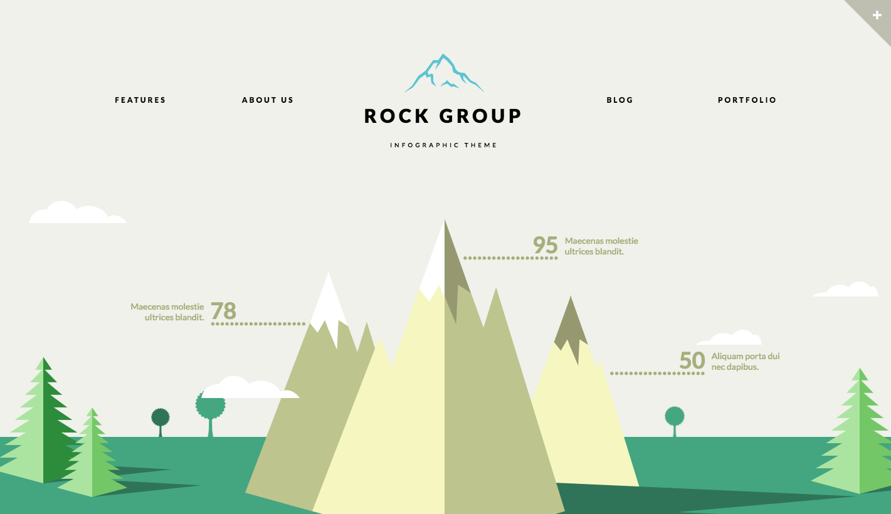

In my case, I liked the simple layout of Ian's website however, I thought there were not enough interactive features within it. With regard to the MPG and UI for my website, I visited a variety of sources and found that often the ones I liked were very similar in terms of layout. The websites that drew our teams attention the most were that of Ian Lunn, The Zurb Foundation and The Rock Group. These websites were showed to the team who then picked out features that they liked and disliked. After this had been done for each website we each then went away and created our own wireframes based on what we liked and disliked. This then led to everyone having separate ideas for their websites whilst still keeping up with current standards.
The RockGroup

The Rock Group however had a multitude of interactive features that were very cool. In addition, i really thought their use of animations were amazing and the layout was well thought out as well. Had i had more experience with the likes of Javascript and general coding I would like to think i could product something like this at some point. However, one aspect i did take in to account was the website itself felt extremely laggy when viewed on my Macbook i.e. scrolling down felt very delayed as all the animations tried to catch up. I also think theres a bit too much going on at the same time for this website.